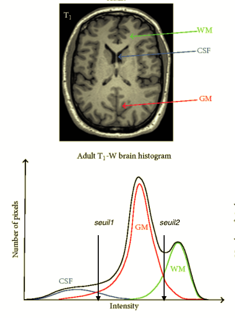

Imagerie médicale¶
L”imagerie par résonance magnétque (IRM) est une téchnique pour obtenir des vues de l’intérieur du corps humain. L”IRM cérébrale est un examen permettant de détecter des anomalies dans le cerveau et d’en déterminer les causes.

Un des avantages de cette modalité d’imagerie est qu’elle permet de visualiser la matière blanche, la matière grise et le liquide rachidien avec des contrastes différents.
On verra dans ce qui suit comment pouvoir segmenter ces images. Une étape très importante dans le domaine biomédical. L’objectif est de séparer les trois classes:
matière grise (gm)
matière blanche (wm)
liquide céphalorachidien (csf)
Importer une image¶
Affichez les fichiers qui se trouvent dans le dossier actuel
ls
Histog_IRM.png brain.jpeg brain2.jpg mask.png tumor.png
MRI_Images.zip brain.jpg mask.bmp mri.ipynb
Les fichiers avec l’extension .ipyjnb correspondent aux fichiers iPython Notebook.
Nous voyons plusieurs fichiers en format image avec les extensions
.png.jpg.bmp
La première étappe est d’importer les modules
numpy (calcul numérique matriciel) et
matplotlib (affichange d’images).
import numpy as np
import matplotlib.pyplot as plt
from matplotlib.image import imread
Maintenant nous pouvons importer les images dans une matrice
brain = imread('brain.jpg')[:,:,0]
La fonction imread (=image read) permet de lire une image a partir d’un fichier et de retourner une matrice numérique 2D. L’opérateur de tranche [:, :, 0] selectionne toutes les pixels mais seulement le premier canal (0).
La variable brain (cerveau en anglais) contient une matrice de l’image.
Regardons sa dimension.
brain.shape
(202, 165)
Exercice
Créez une variable tumor et une variable brain2 et importez les images correspondantes. Affichez leurs dimensions.
Afficher une image¶
Affichons maintenant l’image.
plt.imshow(brain, cmap='gray');
Exercice
Affichez les matrices tumor et brain2 comme images.
Palette de couleurs¶
Une image noir et blanc possède des pixels qui ont des valeurs dans une plage [0…255] avec:
0 noir
127 gris intermédiaire
255 blanc
La palette de couleur permet d’associer d’autres couleurs à ces valeurs de 0 à 255.
Essaysons les palettes jet et hot.
plt.imshow(brain, cmap='jet');
plt.imshow(brain, cmap='hot');
Exercice
Allez sur le site colormaps.
Affichez les matrices tumor et brain2 avec d’autres palettes de couleur.
Barre de couleurs¶
La fonction colorbar ajoute une échelle de couleurs à l’image.
La barre des couleurs associe une couleur spécifique à chaque luminosité. Par exemple pour la barre hot nous avons :
0 - noir
75 - rouge
150 - jaune
200 - blanc
plt.imshow(brain, cmap='hot')
plt.colorbar();
Voici un pixel noir:
brain[20, 20]
1
Voici un pixel jaune:
brain[50, 50]
171
Exercice
Cherchez un pixel avec une valeur d’environ 100 (rouge). Indexez avec l’expression brain[y, x]
Attention
Dans une matrice,
le premier indice indique la ligne (y)
le deuxième indice la colonne (x)
Histogramme d’une image¶
L’histogramme d’une image represente la distribution des intensités: en abscisse on trouve les intensités et en ordonnée le nombre de fois qu’une intensité apparait dans l’image.
Dans une image IRM la distribution des trois tissus (ou classes) est comme suit:

Observons l’histogramme de l’image brain avec la fonction hist. Par défaut la fonction hist compte les pixels pour 10 catégories (bins).
plt.hist(brain.ravel());
La fonction hist a deux options:
binspour indiquer le nombre de catégoriesrangepour indiquer la plage analysée
plt.hist(brain.ravel(), bins=100, range=(0, 255));
Exercice
Refaites l’histogramme en faisant varier:
le nombre de bins (80, 50, 25 par exemple)
le range ((5, 200) ou (25, 200) par exemple)
Classification¶
On s’intéresse principalement à extraire les 2 tissus :
gm (gray matter)
wm (white matter)
Pour la classification il faut balayer tous les pixels:
toutes les lignes (i)
toutes les colonnes (j)
Ensuite il faut comparer la valeur du pixel avec les deux seuils.
img = brain
seuil1 = 70
seuil2 = 150
gm = np.zeros_like(img)
m, n = img.shape
for i in range(m):
for j in range(n):
if seuil1 <= img[i,j] < seuil2:
gm[i, j] = 1
plt.imshow(gm);
La fonction zeros_like crée und nouvelle matrice avec des zéros de la même taille que img.
wm = np.zeros_like(img)
for i in range(m):
for j in range(n):
if seuil2 <= img[i,j]:
wm[i, j] = 1
plt.imshow(wm);
Combinaison des deux images¶
Les matrices gm et wm ne contiennent que des valeurs 0 et 1.
Nous pouvons muliplier la matrice avec un nombre.
Ensuite nous pouvons les additionner pour avoir l’image segmentée.
segmentation = 1 * gm + 2 * wm
plt.imshow(segmentation)
plt.colorbar();
Il est possible de pondérer de façon inverse.
segmentation = 2 * gm + 1 * wm
plt.imshow(segmentation)
plt.colorbar();
Juxtaposer deux images¶
La fonction np.hstack permet de juxtaposer deux matrices et d’en créer une plus grande.
both = np.hstack([gm, wm])
plt.imshow(both);
La largeur est le double.
both.shape
(202, 330)
Exercice
Affichez l’histogramme de
tumorCherchez les seuils appropriés
Modifiez le code de classification pour extraire la matière blanche et grise
Affichez-les
Créer un masque¶
L’image brain2 contient le crâne et les tissus cérébraux: pour faire la classification enlevons le crâne avec un masque.
brain2 = imread('brain2.jpg')[:,:,0]
plt.imshow(brain2);
Pour créer un masque, nous commençons avec une matrice de zéro de la même dimension.
mask = np.zeros_like(brain2)
plt.imshow(mask);
Toutes les pixels sont zéro. Nous pouvons maintenant mettre certains pixels à 1. Par exemple nous pouvons mettre à 1 les pixels de la ligne 100 à 200.
mask[100:200, :] = 1
plt.imshow(mask);
Multiplier ce mask avec une image va masquer tous les pixels qui sont 0 dans le masque, et afficher seuelemment les pixels qui sont à 1 dans le masque.
plt.imshow(brain2 * mask);
Exercice
Créer un masque avec une barre verticale et appliquez la à l’image brain2.
Appliquer un masque¶
Le fichier mask.jpg contient le masque à appliquer pour extraire seulement le cerveau sans le crâne pour l’image brain2.
A la base les pixels blancs ont la valeur 255. Pour obtenir des pixels avec la valeur 1, nous divisions la matrce par 255.
mask = imread('mask.bmp')[:,:,0]
mask = mask/255
plt.imshow(mask)
plt.colorbar();
Vérifions que l’image est binaire
plt.imshow(brain2 * mask)
plt.colorbar();
Exercice
Affichez les 3 images brain2, mask et brain2 * mask avec la fonction hstack et imshow.
Si mask n’est pas visible, multipliez-le par 255.
Vérifions que maskcontient seulement des 0 et 1
Analyser l’image masquée¶
Pour appliquer le masque et extraire le cerveau, nous créons une variable brain_only qui contient la multiplication des deux variables mask et brain2.
Affichons l’histogramme de cette image.
brain_only = brain2 * mask
plt.hist(brain_only.ravel(), bins=25, range=(10, 200));
Exercice
Choissez des seuils approprié pour extraire les 2 tissus avec avec un code que vous écrivez. Puis affichez chacune des classes.
Les ratios¶
Les ratios de chacun tissus par rapport au volume entier du cerveau sont des marqueurs permettent d’analyser les images IRM pour détécter certaines anomalies telles que la dégénérescence cérébrale.
Calculons le nombre de pixels de la matière grise.
np.count_nonzero(gm)
10043
Le nombre total des pixels du cerveau est:
np.count_nonzero(gm + wm)
21785
Donc le ratio de la matière grise est
np.count_nonzero(gm) / np.count_nonzero(gm + wm)
0.46100527886160203
Exercice
Calculez le ratio de matière blanche.